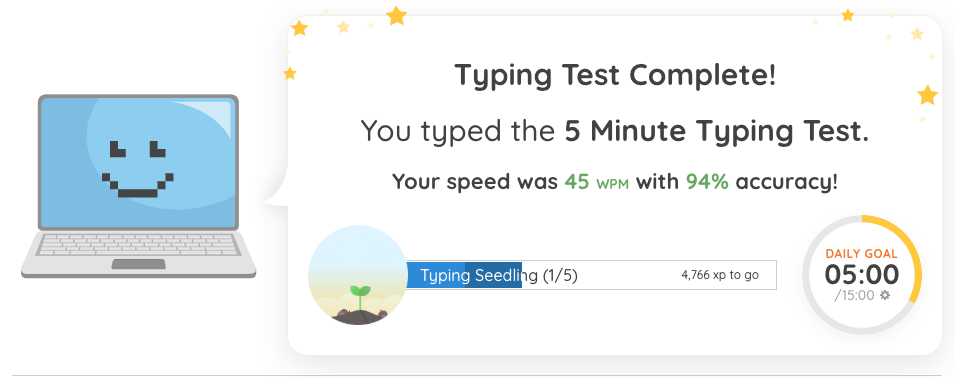
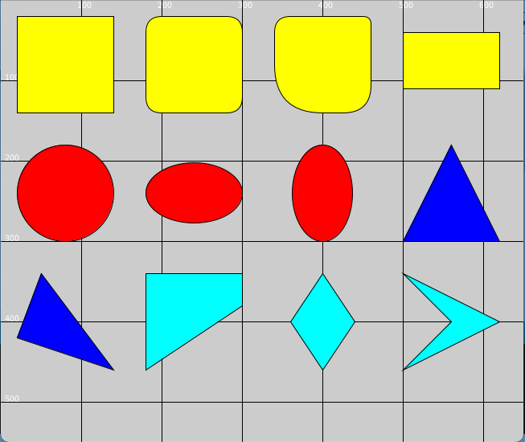
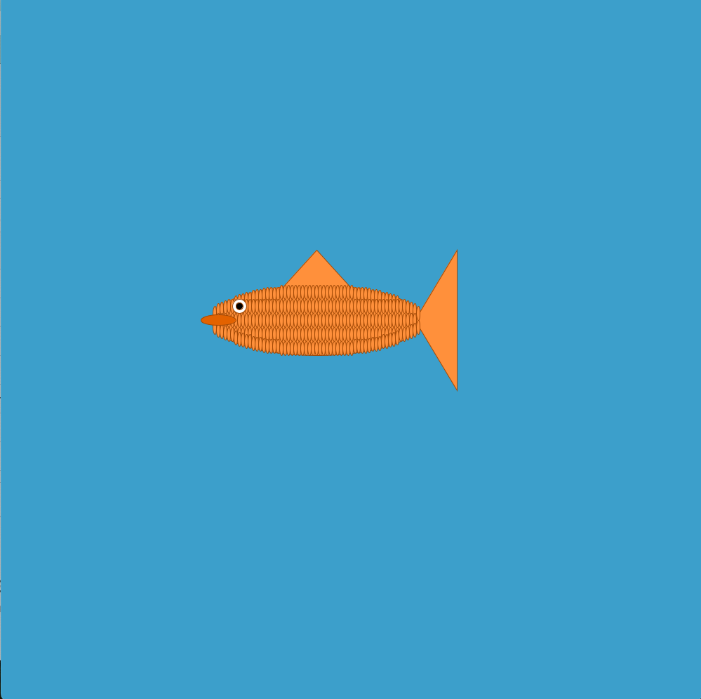
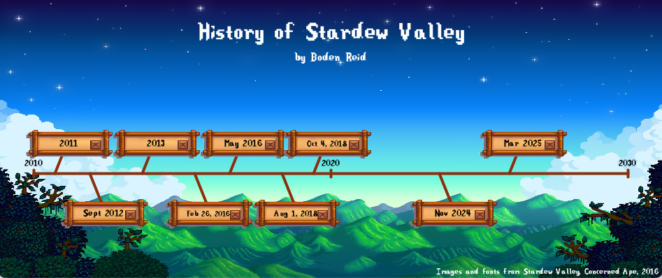
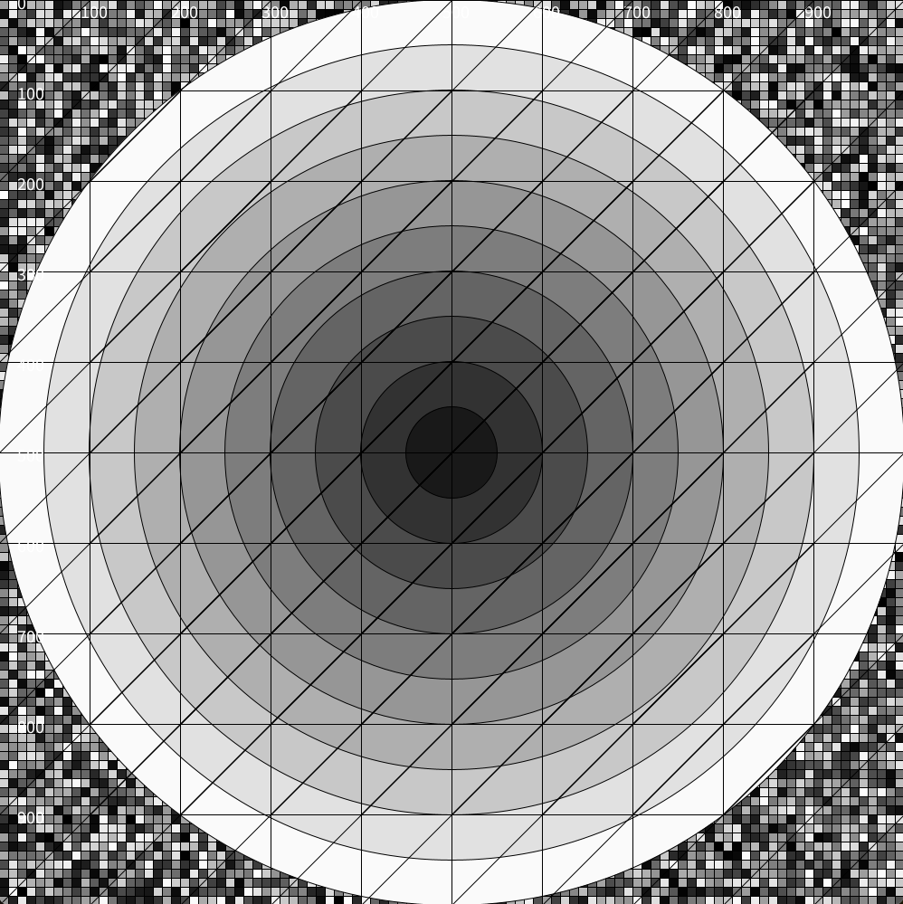
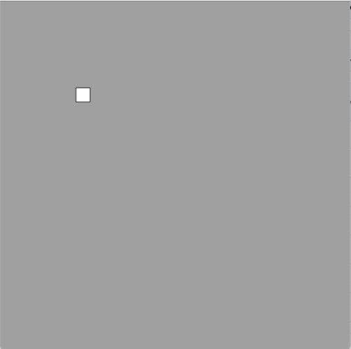
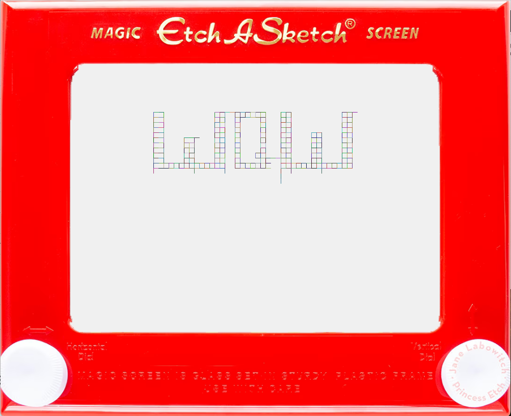
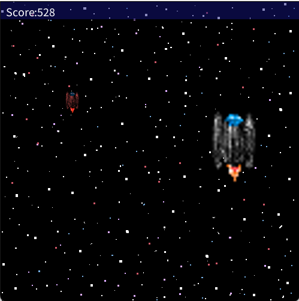
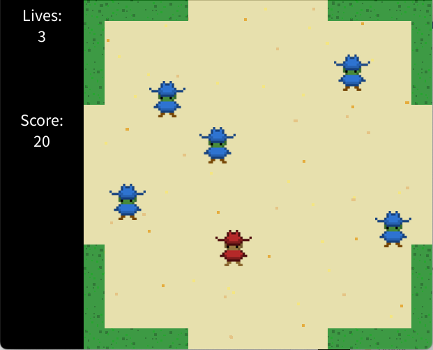

Typing Results
Coding Project
Shapes
This was one of my first projects using processing. In this project, I learned about how all kinds of shapes work in processing.
Creature
This is another project that I made in processing. It is a fish that follows the mouse cursor.
Stardew Valley Timeline
This is a timeline that I made. It is about the game "Stardew Valley". I am really proud of this project. I think it looks great. If you hover over one of the dates on the timeline, it will show more info about that date.
Loops
This is another project that I made in processing. I made this project to learn about random numbers and loops.
Keyboard Control
One of my other projects that I made in processsing is this keyboard project. It has a small square that moves in each of the four cardinal directions when pressing the respective keys. This project may not be very impressive on it's own, but it is very useful for making keyboard control in future projects.
Etch-A-Sketch
This is a project that I made on processing that is based on an Etch-A-Sketch. You can move around a line to draw whatever you want. In this image, I wrote the word "WOW". The color of the line changes randomly over time.
Shape Game
This is a game that I made in processing. You can move around a ship and it faces the direction it is moving. The ship has to chase down an enemy ship. If they catch the enemy ship, they get points, depending on how long it has been since the enemy ship apeared. While the enemy ship is on the screen, it is shrinking to show how many points the player will get. If the enemy ship gets to small, the game will end. As the player catches more enemy ships, the ships start to escape faster.
Journey of a Prarie King Clone
This is another game that I made in processing. It is a clone of a minigame in the game "Stardew Valley" by Concerned Ape. In the game, zombies apear from the sides of the screen. These zombies move around randomly. You can shoot projectiles using the "f" key. If you hit a zombie, it disapears and more zombies spawn. If a zombie hits you, you lose a life. If you run out of lives, the game ends. For every zombe that you hit, you get ten points. I am really proud of this game. It has lots of features that I didn't think I would be able to make. I had never used classes or made animations before in processing. With this project, I was able to do both of those things. I am also proud of how the art turned out. I think the game looks great.